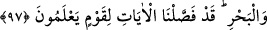

bir senede tamamlayacak şekilde güneşin süratini ve hareketlerini ayarlamış, Ay’ın da
devrini bir ayda tamamlayacak şekilde programlamıştır. Bu programlama ile meyvaların
olgunlaşması, ekim biçim ve üreme gibi dünyanın düzenini sağlayan dört mevsimin
faydaları ortaya çıkmıştır. Ayın menzillerinin değişmesi ve her ay hilallerin yenilenmesi
ile borçların müddetleri, işlerin görülme zamanı bilinir. Allah’ın güneş ile ayı bir hesap
üzere kılması demek, onları hesab ilminin iki vasıtası kılması demektir.
Güneş ışık vermesi sebebiyle âyette aydan önce zikredilmiştir. Çünkü güneş ayın ve
yıldızların kaynağı ve ışıkların aslıdır. Diğerleri berraklıkları ve güneşle olan
konumlarına göre ışıklarını ondan alırlar.
“İşte” güneşin ve ayın vakit ölçüsü kılınması, yani bilinen hesap için onların eşsiz bir
şekilde yürütülmesi “azîz olan” ay ve güneşi buyruğu altına alan onları belirli bir
yörüngede yürüten “ve herşeyi bilen” Güneş ve Ay’da mahlûkatın menfaatine ve
maslahatına olanı da en iyi bilen “Allah’ın takdiridir.”
Sa’dî şöyle demiştir:
Bulutlar, rüzgarlar, gökteki aylar, güneşler hep
Çalışmakta. Sakın bir ekmeği yerken eyleme gaflet!
O bir ekmekte vardır hepsinin de hisse-i sa’yi
Sana hep bunları hâdim kılan Allah’a minnet et!
97. O, kara ve denizin karanlıklarında kendileri ile yol bulasınız diye sizin için
yıldızları yaratandır. Gerçekten biz, bilen bir toplum için âyetleri geniş geniş
açıkladık.
“O” Allah ki noksansız kudreti ile “karanın ve denizin” yani karada ve denizde
gecenin “karanlıklarında yolunuzu bulasınız diye sizin için” kuzey, güney, doğu ve
batıda yerleri değişen “yıldızları yaratandır.”
Karanlıkların kara ve denize izafe edilmesi, onları sarıp kuşattığı içindir. Çünkü
yıldızlarla yol bulmaya o zaman ihtiyaç duyulur.
Haddâdî bu âyeti şöyle tefsir etmiştir: Allah bir beldeden diğer beldeye giderken
çöllerin ve gemide iken azgın dalgalı denizlerin karanlığında yolunuzu bulabilmeniz için
yıldızları halketmiştir. Yolcular bu yıldızlardan bir kısmını sağlarına, bir kısmını
sollarına ve bir kısmını da arkalarına alarak varacakları yeri bulurlar.
Yıldızların gökyüzünü süslemeleri, şeytanların taşlanmasında kullanılmaları gibi daha
başka faydaları da vardır.
“Muhakkak biz bilen bir kavim için” kudretimize delalet eden “ayetleri” fasıl fasıl